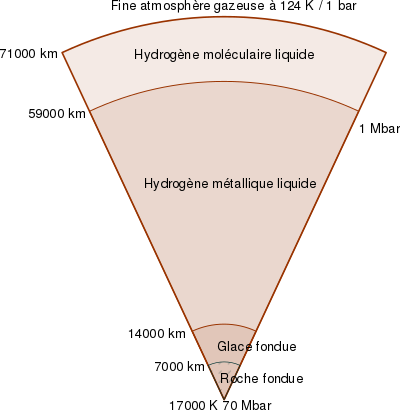
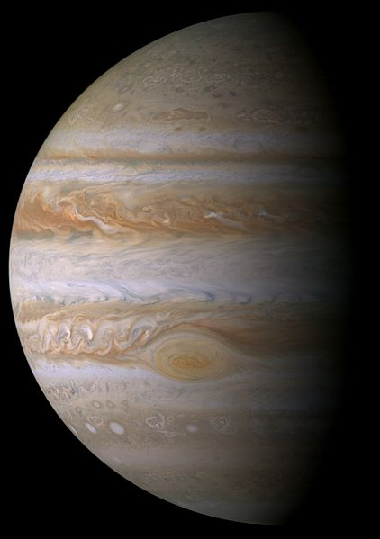
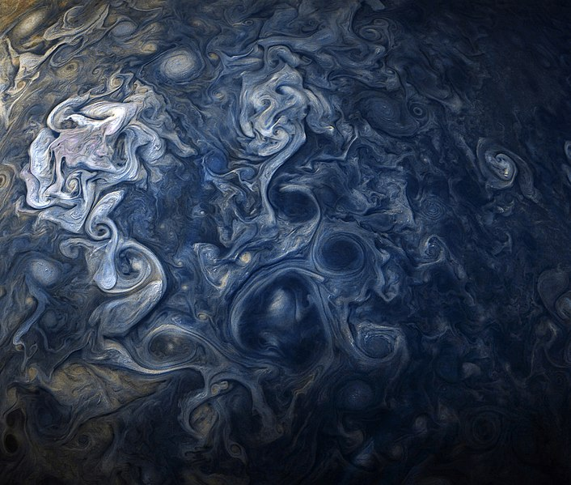

Jupiter est une planète géante gazeuse. Il s'agit de la plus grosse planète du Système solaire, plus volumineuse et massive que toutes les autres planètes
réunies, et la cinquième planète par sa distance au Soleil (après Mercure, Vénus, la Terre et Mars). Jupiter est ainsi officiellement désignée, en français comme en anglais,
d'après le dieu romain Jupiter, assimilé au dieu grec Zeus.
Le symbole astronomique de la planète était « ♃ », qui serait une représentation stylisée du foudre de Jupiter, ou bien serait dérivé d'un hiéroglyphe ou,
comme cela ressortirait de certains papyrus d'Oxyrhynque, de la lettre grecque zêta, initiale du grec ancien Ζεύς (Zeús). L'Union astronomique internationale recommande
de substituer au symbole astronomique « ♃ » l'abréviation « J », correspondant à la lettre capitale J de l'alphabet latin, initiale de l'anglais Jupiter.
Visible à l'oeil nu dans le ciel nocturne, Jupiter est habituellement le quatrième objet le plus brillant de la voûte céleste, après le Soleil, la Lune et Vénus.
Parfois, Mars apparaît plus lumineuse que Jupiter et, de temps en temps, Jupiter apparaît plus lumineuse que Vénus. Jupiter était au périhélie le 17 mars 2011 et à l'aphélie le 17 février 2017.
Comme sur les autres planètes gazeuses, des vents violents, de près de 600 km/h, parcourent les couches supérieures de la planète. La Grande Tache rouge est un anticyclone,
une zone de surpression observée depuis au moins le xviie siècle. Trois fois plus grande que la Terre au début du xxe siècle, elle a rétréci pour devenir de taille comparable un siècle plus tard. Regroupant
Jupiter et les objets se trouvant dans sa sphère d'influence, le système jovien est une composante majeure du Système solaire externe. Il comprend notamment les nombreuses lunes
de Jupiter dont les quatre lunes galiléennes — Io, Europe, Ganymède et Callisto — qui, observés pour la première fois en 1610 par Galilée au moyen d'une lunette
astronomique de son invention, sont les premiers objets découverts par l'astronomie télescopique. Il comprend aussi les anneaux de
Jupiter, un système d'anneaux planétaires observés pour la première fois, en 1979, par la sonde spatiale américaine Voyager 1.
L'influence de Jupiter s'étend, au-delà du système jovien, à de nombreux objets dont les astéroïdes troyens de Jupiter.
La masse jovienne est une unité utilisée pour exprimer la masse d'objets substellaires tels que les naines brunes.
Caractéristiques physiques
Composition chimique
La haute atmosphère de Jupiter est composée à 93 % d'hydrogène et 7 % d'hélium en nombre d'atomes, ou à 86 % de dihydrogène et 13 % d'hélium en nombre de molécules.
En masse, l'atmosphère est approximativement constituée de 75 % d'hydrogène et de 24 % d'hélium, le pourcent restant étant apporté par divers autres éléments et
composés chimiques (traces de méthane, de vapeur d'eau, d'ammoniac, très petites quantités de carbone, d'éthane, de sulfure d'hydrogène, de néon, d'oxygène,
d'hydrure de phosphore et de soufre). La couche la plus externe de la haute atmosphère contient des cristaux d'ammoniac.
Par mesures infrarouges et ultraviolettes, des traces de benzène et d'autres hydrocarbures ont également été détectées.
L'intérieur de Jupiter contient des matériaux plus denses et la distribution par masse est de 71 % d'hydrogène, 24 % d'hélium et 5 % d'autres éléments.
Les proportions d'hydrogène et d'hélium dans la haute atmosphère sont proches de la composition théorique de la nébuleuse planétaire qui aurait donné
naissance au Système solaire. Néanmoins, le néon n'y est détecté qu'à hauteur de vingt parties par million en termes de masse, un dixième de ce qu'on
trouve dans le Soleil. L'hélium y est également en défaut, mais à un degré moindre. Cette absence pourrait résulter de la précipitation de ces éléments
vers l'intérieur de la planète. Les gaz inertes lourds sont deux à trois fois plus abondants dans l'atmosphère de Jupiter que dans le Soleil.
Par spectroscopie, on pense que Saturne possède une composition similaire, mais qu'Uranus et Neptune sont constituées de beaucoup moins d'hydrogène
et d'hélium. Cependant, aucune sonde n'ayant pénétré l'atmosphère de ces géantes gazeuses, les données d'abondance des éléments plus lourds ne sont pas connues
.
Masse et dimensions
Jupiter est 2,5 fois plus massive que toutes les autres planètes du Système solaire réunies, tellement massive que son barycentre avec le Soleil est
situé à l'extérieur de ce dernier, à environ 1,068 rayon solaire du centre du Soleil. Par ailleurs, son diamètre est 11 fois plus grand que
celui de la Terre (environ 143 000 km) et on pourrait placer environ 1 322 corps de la taille de cette dernière dans le volume
occupé par la géante gazeuse. En revanche, la densité de Jupiter n'est que le quart de celle de la Terre (0,240 fois, précisément) :
elle n'est donc que 318 fois plus massive que cette dernière.
Cette masse a eu une grande influence gravitationnelle sur la formation du Système solaire :
la plupart des planètes et des comètes de courte période sont situées près de Jupiter et les lacunes de Kirkwood de la ceinture d'astéroïdes lui sont dues en grande partie.
Si Jupiter était plus massive, on pense que son diamètre serait plus petit. L'intérieur de la planète serait plus comprimé par une plus grande force gravitationnelle,
décroissant sa taille. Par conséquent, Jupiter posséderait le diamètre maximal d'une planète de sa composition et de son histoire.
La planète a parfois été décrite comme une « étoile ratée », mais il faudrait qu'elle possède 13 fois sa masse actuelle pour démarrer
la fusion du deutérium et être cataloguée comme une naine brune et 75 fois pour devenir une étoile. La plus petite naine rouge connue
est seulement 30 % plus volumineuse que Jupiter.Des exoplanètes beaucoup plus massives que Jupiter ont été découvertes. Ces planètes pourraient être des
géantes gazeuses semblables à Jupiter, mais pourraient appartenir à une autre classe de planètes, celle des Jupiter chauds, parce qu'elles sont très proches de leur étoile primaire.
Jupiter rayonne plus d'énergie qu'elle n'en reçoit du Soleil. La quantité de chaleur produite à l'intérieur de la planète est presque égale à celle reçue du Soleil.
Le rayonnement additionnel est généré par le mécanisme de Kelvin-Helmholtz, par contraction adiabatique. Ce processus conduit la planète à rétrécir de 2 cm chaque année.
Lorsque Jupiter s'est formée, elle était nettement plus chaude et son diamètre était double.
Structure interne
Actuellement, les connaissances sur la composition planétaire de Jupiter sont relativement spéculatives et ne reposent que sur des mesures indirectes. Selon l'un des modèles proposés,
Jupiter ne posséderait aucune surface solide, la densité et la pression augmentant progressivement vers le centre de la planète. Selon une autre hypothèse,
Jupiter pourrait être composée d'un noyau rocheux (silicates et fer) comparativement petit (mais néanmoins de taille comparable à la Terre et de dix à quinze fois la masse de celle-ci),
entouré d'hydrogène en phase métallique qui occupe 78 % du rayon de la planète. Cet état serait liquide, à la manière du mercure. Il est dénommé ainsi car la
pression est telle que les atomes d'hydrogène s'ionisent, formant un matériau conducteur. Cet hydrogène métallique serait lui-même entouré d'hydrogène liquide,
à son tour entouré d'une fine couche hydrogène gazeux. Ainsi, Jupiter serait en fait une planète essentiellement liquide.
Des expériences ayant montré que l'hydrogène ne change pas de phase brusquement (il se trouve bien au-delà du point critique),
il n'y aurait pas de délimitation claire entre ces différentes phases, ni même de surface à proprement parler. Quelques centaines
de kilomètres en dessous de la plus haute atmosphère, la pression provoquerait une condensation progressive de l'hydrogène sous forme
d'un brouillard de plus en plus dense qui formerait finalement une mer d'hydrogène liquide. Entre 14 000 et 60 000 km de profondeur, l'hydrogène
liquide céderait la place à l'hydrogène métallique de façon similaire. Des gouttelettes de démixtion, plus riches en hélium et néon se précipiteraient vers le bas
à travers ces couches, appauvrissant ainsi la haute atmosphère en ces éléments.
Les énormes pressions générées par Jupiter entrainent les températures élevées à l'intérieur de la planète, par un phénomène de compression gravitationnelle
(mécanisme de Kelvin-Helmholtz) qui se poursuit encore de nos jours, par une contraction résiduelle de la planète.
Des résultats de 1997 du Laboratoire national de Lawrence Livermore indiquent qu'à l'intérieur de Jupiter, la transition de phase à l'hydrogène métallique se
fait à une pression de 140 GPa (1,4 Mbar) et une température de 3 000 K. La température à la frontière du noyau serait de l'ordre de 15 000 K et la pression à
l'intérieur d'environ 3 000 à 4 500 GPa (30−45 Mbar), tandis que la température et la pression au centre de Jupiter serait de l'ordre de 20 000 K et 70 Mbar,
soit plus de trois fois plus chaude que la surface du Soleil.

La faible inclinaison de l'axe de Jupiter fait que ses pôles reçoivent bien moins d'énergie du Soleil que sa région équatoriale. Ceci causerait d'énormes mouvements de convection
à l'intérieur des couches liquides et serait ainsi responsable des forts mouvements des nuages dans son atmosphère.
Atmosphère
L'atmosphère jovienne comporte trois couches de nuages distinctes :
la plus externe serait formée de nuages de glace d'ammoniac ;
la suivante, de nuages d'hydrogénosulfure d'ammonium (NH4HS) ;
la dernière de nuages d'eau et de glace.
La combinaison des nuages d'eau et de la chaleur provenant de l'intérieur de la planète est propice à la formation d'orages.
La foudre engendrée est jusqu'à 1 000 fois plus puissante que celle observée sur la Terre.
L'atmosphère externe de Jupiter subit une rotation différentielle, remarquée pour la première fois par Giovanni Domenico Cassini en 1690,
qui a aussi estimé sa période de rotation. La rotation de l'atmosphère polaire de Jupiter est d'environ 5 minutes plus longue que
celle de l'atmosphère à la ligne équatoriale. De plus, des bancs de nuages circulent le long de certaines latitudes en direction opposée des vents dominants.
Des vents d'une vitesse de 360 km/h y sont communs. Ce système éolien serait causé par la chaleur interne de la planète. Les interactions entre ces systèmes
circulatoires créent des orages et des turbulences locales, telles la Grande Tache rouge, un large ovale de près de 12 000 km sur 25 000 km d'une grande stabilité,
puisque déjà observé avec certitude depuis au moins 1831 et possiblement depuis 1665. D'autres taches plus petites ont été observées depuis le XXe siècle.
La couche la plus externe de l'atmosphère de Jupiter contient des cristaux de glace d'ammoniac. Les couleurs observées dans les nuages proviendraient des
éléments présents en quantité infime dans l'atmosphère, sans que les détails soient là non plus connus. Les zones de nuages varient d'année en année en termes de largeur,
couleur et intensité, mais sont toutefois assez stables pour que les astronomes leur assignent des noms.


Si vous voulez retourner en haut de la page, cliquez ici.